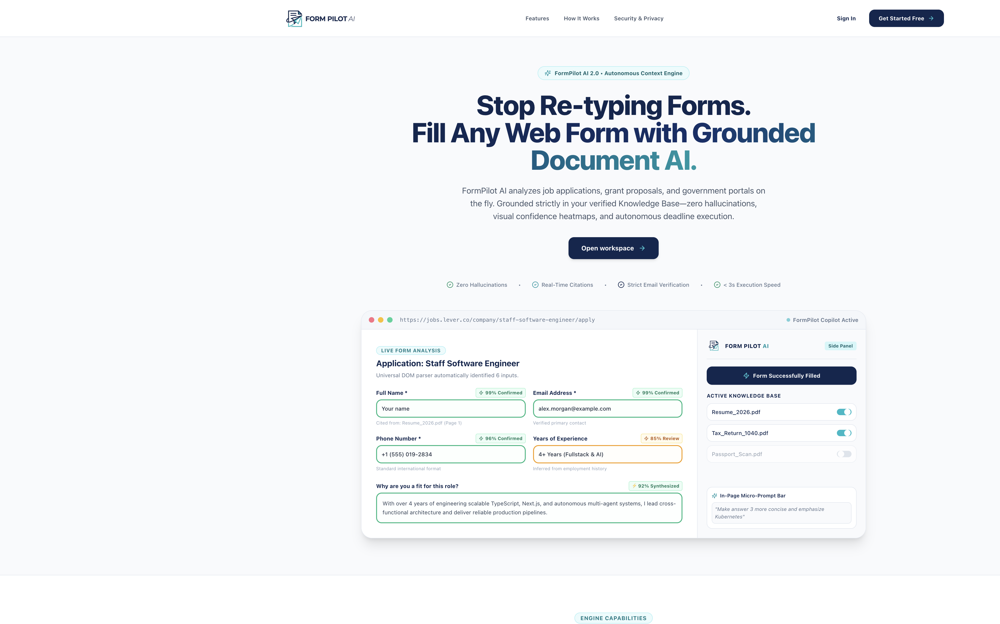
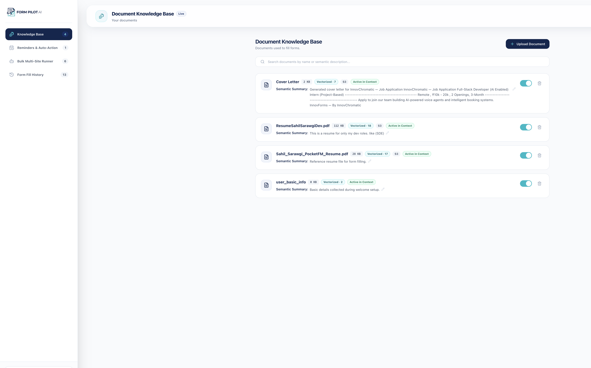
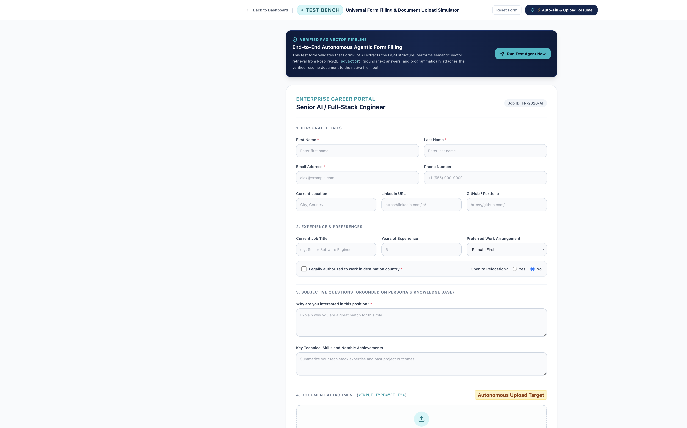
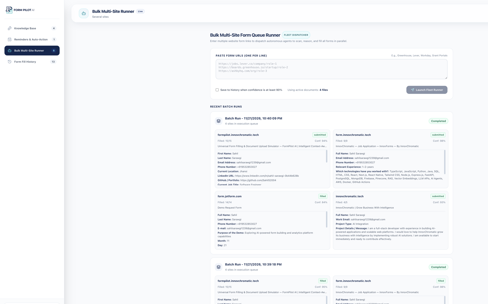

InnovChromatic · November 2026
A form should already know who you are.
FormPilot AI keeps a resume, a profile, and the answers you have already given, then uses them to fill the form that is open in the browser. This is the full path: what gets stored, how a single page is answered, how a missing cover letter is drafted, and how a list of sites becomes a batch you can read afterwards.

What the project is
FormPilot is two programs that share one brain. The website is the control room. You keep documents there, turn them on or off, set reminders, read past fills, and launch a batch across several URLs. The Chrome extension is the hand on the page. It reads the form you are looking at and writes the answers back into the real inputs.
It is meant for facts that already exist somewhere you trust: your name, a phone number, a project link, the resume that matches a developer role, a cover letter you already accepted for a company. When the knowledge base has nothing that supports a question, the field stays blank. Passwords, card numbers, and government ID numbers are not stored.
The web app is Next.js. Files sit in a private S3 bucket. Text and vectors sit in Postgres with pgvector. Answers and embeddings come from Gemini. When a letter needs a look at the company, that research goes through Tavily. The extension is a separate Chrome package. Reloading it means loading the unpacked build in apps/extension/dist. A deploy of the website does not update the extension.
The knowledge base
Every answer is supposed to start from a document you uploaded or from a fact you already confirmed. A PDF is read into text, including the words behind a hyperlink, then split into chunks and embedded. The vectors sit beside the document rows so a question can find the passage that actually mentions the fact. The original file stays in S3 so a resume upload can attach that file, not a retyped summary of it.
Each document has a short description. That description is how a resume marked “only for my dev roles” can be chosen on an engineering application instead of a different resume in the same library. A document can be switched off. Off means the next fill cannot see it. The welcome profile — name, email, phone, address — is its own small document, so those fields do not depend on a resume happening to mention them.
Search is both a vector search and a keyword search. The vector search finds a passage that is about the question even when the wording differs. The keyword search catches exact tokens such as a phone number, a city, or a skill name. Past fills are added as question-and-answer lines. The website, the URL, and the page title are left out, so an old login screen cannot leak into a job application.

How one form gets filled
You open a form, then open FormPilot from the floating button. That button toggles the Chrome side panel on the same tab. It does not open a new window. The content script reads only the fields that are on the screen: labels, text boxes, radios, selects, and file inputs. A wizard is filled one step at a time, because the next step is not in the page yet. You run fill again after you move forward.
- 1The page schema is sent to
/api/fill-form. Questions are embedded together, then matched with vector search and a keyword search. - 2Past fills are added as question-and-answer lines. The site name, URL, and page title are left out, so an old login page cannot leak into a job application.
- 3One Gemini call answers the page. A choice has to match a real option. “1–2 years”, “1-2 years”, and “1.5 years” can land on the same radio.
- 4The extension writes each value and fires the input events the page’s own framework expects. A hidden file input receives the PDF, so the site’s upload control updates.
A passport, a photo, or a certificate stays empty. Those are not documents FormPilot should invent. A cover letter or a proposal is different: if the library does not already have one, a second agent can draft it.
Drafting a document
The other questions on the page are filled first. Then the page blurs and tells you which document it is making. There is no extra confirmation step before the draft starts. Tavily looks up the company. Gemini writes three to five paragraphs in the first person and is not allowed to invent a job that is not in the knowledge base. You can preview the PDF, accept it, or reject it.
Accept is the only moment the file is stored. The PDF is written to S3, a knowledge-base row is created, and the text is indexed so the next form can attach that same letter. Reject clears the draft. It never becomes a document. The overlay lives on the page, and the extension asks the background script to call the API, because a content script is not allowed to call another origin directly.
The demo form
The site includes a career-style form so the whole loop can be tried without leaving FormPilot. It has a name, contact details, links, a job title, years, a work-arrangement select, a work-authorization checkbox, a relocation radio, two long answers, and a resume upload. A complete run fills the facts the knowledge base actually has and attaches the developer resume. The long answers are written from that material. A field with no supporting fact is left alone.

Many sites, one batch
The fleet is the same fill, pointed at a list of addresses instead of the tab you are looking at. You paste one URL per line and launch the runner. The server fetches each page. A normal HTML form is read from its inputs. A client-side wizard that only renders the first step still has the rest of its fields in the page data, and those fields are used. A single-page site with no inputs in the first HTML is read from the script that draws the form.
Sites are handled one after another, because each page is a model call. While a batch is running, the dashboard polls and updates the cards. A finished card shows the status, how many fields were answered, the average confidence, and the question-and-answer list. That list is the recent history of the run.
The fleet does not submit the other website. It records the answers FormPilot would use. A checkbox on the runner can also save a row into FormPilot history when the average confidence is at least 90 percent. That row is still inside FormPilot. It is not an HTTP post to the job application, the contact form, or a public form host.

The rest of the workspace
Reminders
A reminder is a form you still owe. The server checks reminders while the app is running. The extension can show one, and it stays up until you mark it read. Closing it only hides it until the next check.
History
History is the set of fills that were saved as submissions. Later fills may reuse those question-and-answer lines. They do not reuse the site name or the page title. The History tab and the batch cards are different lists. The batch card is the log of a fleet run. History is the log of fills you chose to keep.
Tone
Tone changes how a paragraph is written: requesting, factual, professional, or casual. It does not give the model permission to invent a year of experience, a company, or a date that is not in the documents.
Where it runs
| Piece | What it does |
|---|---|
| Web app | Next.js on Fargate, behind a load balancer, at formpilot.innovchromatic.tech |
| Database | Postgres 16 with pgvector, private to the network. Documents, answers, jobs, and batches live here. |
| Files | Encrypted S3. A drafted PDF is uploaded only after you accept it. |
| Model | Gemini answers the page and builds the embeddings. Tavily is used when a letter needs company research. |
| Extension | Chrome Manifest V3. The side panel calls the API. The content script talks to the page through the background script. |
Turning the system off stops the web tasks and the database. The load balancer stays, so the domain does not have to be pointed somewhere new when the system comes back. A stopped database starts itself again after seven days.
What a good fill looks like
On the demo form, a complete run can fill the name, the email, the phone, the city, the profile links, the title, the years, the work arrangement, relocation, a short reason, a skills paragraph, and the developer resume. On a job form that also asks for a cover letter, the saved letter is attached instead of starting a new draft, and an experience radio resolves to the closest range the documents support. Optional questions with no supporting fact stay blank.
That is the whole loop. Documents in, a page read, one grounded answer, and a person still in charge of the final submit.